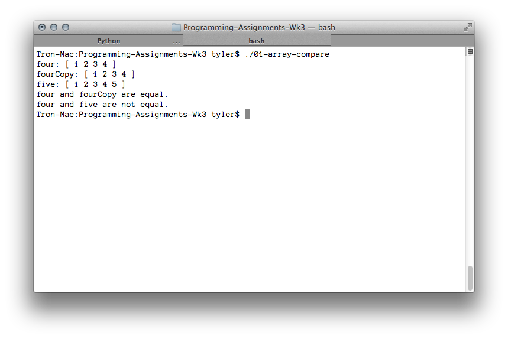

---
layout: default
title: 01-array-compare
---
Note: tmlib.h is a helper function defined by me. It can be found from the Assignments page.
{% highlight c++ %}
// Tyler Mumford, 2014
// Function returns true if two arrays are identical.
#include
#include
#include
bool arraysAreEqual (int *firstArray, int *secondArray, int count);
int main () {
int four[] = {1,2,3,4};
int fourCopy[] = {1,2,3,4};
int five[] = {1,2,3,4,5};
printf("four: ");
printArrayInt(four, 4);
printf("fourCopy: ");
printArrayInt(fourCopy, 4);
printf("five: ");
printArrayInt(five, 5);
if (arraysAreEqual(four, fourCopy, 4)) {
printf("four and fourCopy are equal.\n");
} else {
printf("four and fourCopy are not equal.\n");
}
if (arraysAreEqual(four, five, 5)) {
printf("four and five are equal.\n");
} else {
printf("four and five are not equal.\n");
}
return 0;
}
bool arraysAreEqual (int *firstArray, int *secondArray, int count) {
int i;
for (i = 0; i < count; i++) {
if (firstArray[i] != secondArray[i]) return false;
}
return true;
}
{% endhighlight %}
